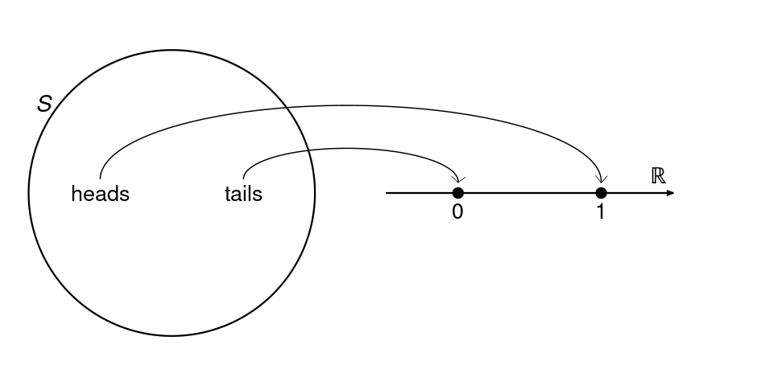
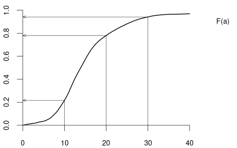
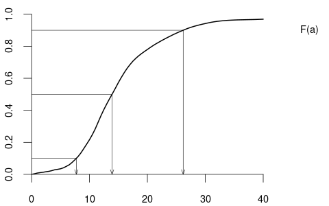
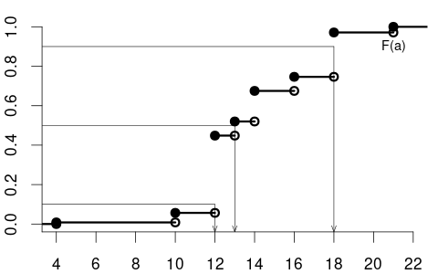
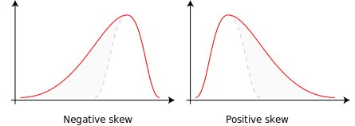
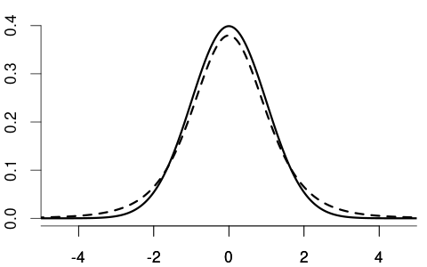
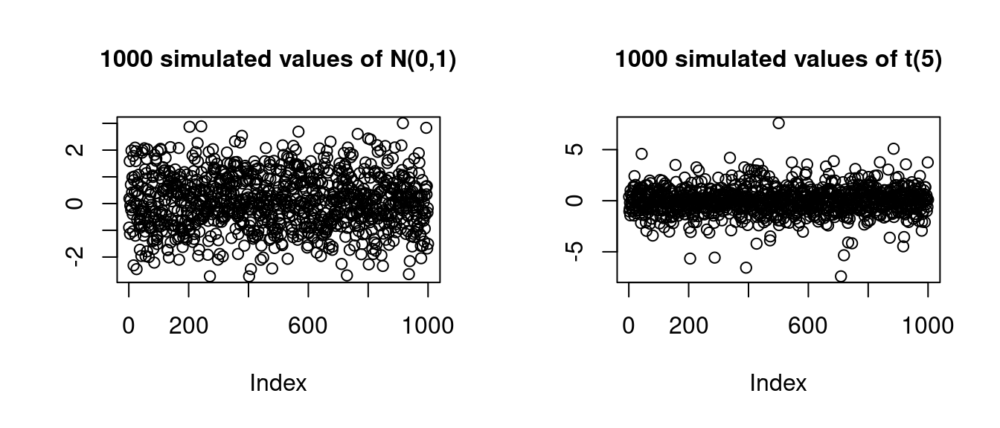
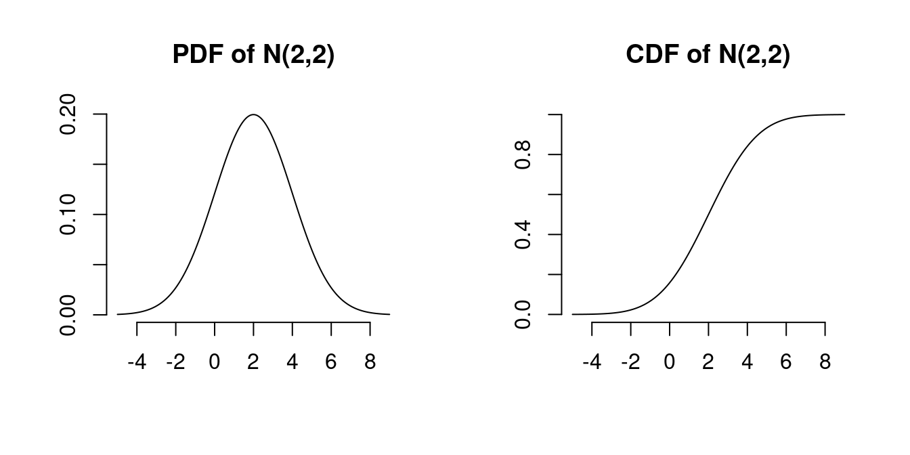

| ISCED level | Education level | Years of schooling |
|---|---|---|
| 1 | Primary | 4 |
| 2 | Lower Secondary | 10 |
| 3 | Upper secondary | 12 |
| 4 | Post-Secondary | 13 |
| 5 | Short-Cycle Tertiary | 14 |
| 6 | Bachelor's | 16 |
| 7 | Master's | 18 |
| 8 | Doctoral | 21 |
2 Probability
2.1 Random experiments
A random experiment is a procedure or situation where the result is uncertain and determined by a probabilistic mechanism. An outcome is a specific result of a random experiment. The sample space S is the set/collection of all potential outcomes.
Let’s consider some examples:
Coin toss: The outcome of a coin toss can be ‘heads’ or ‘tails’. This random experiment has a two-element sample space: S = \{heads, tails\}.
Gender: If you conduct a survey and interview a random person to ask them about their gender, the answer may be ‘female’, ‘male’, or ‘diverse’. It is a random experiment since the person to be interviewed is selected randomly. The sample space has three elements: S = \{female, male, diverse\}.
Education level: If you ask a random person about their education level according to the ISCED-2011 framework, the outcome may be one of the eight ISCED-2011 levels. We have an eight-element sample space: S = \{Level \ 1, Level \ 2, Level \ 3, Level \ 4, Level \ 5, Level \ 6, Level \ 7, Level \ 8\}.
Wage: If you ask a random person about their income per working hour in EUR, there are infinitely many potential answers. Any (non-negative) real number may be an outcome. The sample space is a continuum of different wage levels.
2.2 Random variables
A random variable is a numerical summary of a random experiment. In econometrics and applied statistics, we always express random experiments in terms of random variables. Let’s define some random variables based on the random experiments above:
- Coin: A two-element sample space random experiment can be transformed to a binary random variable, i.e., a random variable that takes either 0 or 1. We define the coin random variable as Y = \begin{cases} 1 & \text{if outcome is heads,} \\ 0 & \text{if outcome is tails.} \end{cases} A binary random variable is also called Bernoulli random variable.

Female dummy: The three-element sample space of the gender random experiment does not provide any natural ordering. A useful way to transform it into random variables are dummy variables. The female dummy variable is a Bernoulli random variable with Y = \begin{cases} 1 & \text{if the person is female,} \\ 0 & \text{if the person is not female.} \end{cases} Similarly, dummy variables for male and diverse can be defined.
Education: The eight-element sample space of the education-level random experiment provides a natural ordering. We define the random variable education as the number of years of schooling of the interviewed person: Y = \text{number of years of schooling} \in \{4, 10, 12, 13, 14, 16, 18, 21\}.
- Wage: The wage level of the interviewed is already numerical. The random variable is Y = \text{income per working hour in EUR}.
2.3 Probability function
In the case of a fair coin, it is natural to assign the following probabilities to the coin variable: P(Y = 0) = 0.5 and P(Y = 1) = 0.5. By definition, the coin variable will never take the value 2.5, so the corresponding probability is P(Y=2.5) = 0. We may also consider intervals, e.g., P(Y \geq 0) = 1 and P(-1 \leq Y < 1) = 0.5
The probability function P assigns values between 0 and 1 to events. Specific subsets of the real line define events. Any real number defines an event, and any open, half-open, or closed interval represents an event as well, e.g., A_1 = \{Y=0\}, \quad A_2 = \{Y=1\}, \quad A_3 = \{Y=2.5\} and A_4 = \{Y \geq 0\}, \quad A_5 = \{ -1 \leq Y < 1 \}. We may take complements A_6 := A_4^c = \{Y \geq 0\}^c = \{ Y < 0\}, as well as unions and intersections: \begin{align*} A_7 &:= A_1 \cup A_6 = \{Y=0\} \cup \{Y< 0\} = \{Y \leq 0\}, \\ A_8 &:= A_4 \cap A_5 = \{Y \geq 0\} \cap \{ -1 \leq Y < 1 \} = \{ 0 \leq Y < 1 \}. \end{align*} Unions and intersections can also applied iteratively, A_9 := A_1 \cup A_2 \cup A_3 \cup A_5 \cup A_6 \cup A_7 \cup A_8 = \{ Y \in (-\infty, 1] \cup \{2.5\}\}, and by taking complements, we obtain the full real line and the empty set: \begin{align*} A_{10} &:= A_9 \cup A_9^c = \{Y \in \mathbb R\}, \\ A_{11} &:= A_{10}^c = \{\}. \end{align*} You may verify that P(A_1) = 0.5, P(A_2) = 0.5, P(A_3) = 0, P(A_4) = 1 P(A_5) = 0.5, P(A_6) = 0, P(A_7) = 0.5, P(A_8) = 0.5, P(A_9) = 1, P(A_{10}) = 1, P(A_{11}) = 0. If you take the variables education or wage, the probabilities of these events may be completely different.
To make probabilities a mathematically sound concept, we have to define to which events probabilities are assigned and how these probabilities are assigned. We consider the concept of a sigma algebra to collect all events.
Sigma algebra
A collection \mathcal B of sets is called sigma algebra if it satisfies the following three properties:
\{\} \in \mathcal B (empty set)
If A \in \mathcal B then A^c \in \mathcal B
If A_1, A_2, \ldots \in \mathcal B, then A_1 \cup A_2 \cup \ldots \in \mathcal B.
If you take all events of the form \{ Y \in (a,b) \}, where a, b \in \mathbb R \cup \{-\infty, \infty\}, and if you add all unions, intersections, and complements of these events, and again all unions, intersections, and complements of those events, and so on, you will obtain the so-called Borel sigma algebra. The Borel sigma algebra contains all events we assign probabilities to, the Borel sets.
Probabilities must follow certain conditions. The following axioms ensure that these conditions are fulfilled:
Probability function
A probability function P is a function P: \mathcal B \to [0,1] that satisfies the Axioms of Probability:
P(A) \geq 0 for every A \in \mathcal B
P(Y \in \mathbb R) = 1
If A_1, A_2, A_3 \ldots are disjoint then A_1 \cup A_2 \cup A_3 \cup \ldots = P(A_1) + P(A_2) + P(A_3) + \ldots
Recall that two events A and B are disjoint if they have no outcomes in common, i.e., if A \cap B = \{\}. For instance, A_1 and A_2 are A_1 = \{Y=0\} and A_2 = \{Y=1\} are disjoint, but A_1 and A_4 = \{Y \geq 0\} are not disjoint, since A_1 \cap A_4 = \{Y=0\} is nonempty.
Probabilities are a well-defined concept if we use the Borel sigma algebra and the axioms of probability. The mathematical details are developed in the field of measure theory.
The axioms of probability imply the following rules of calculation:
Basic rules of probability
- 0 \leq P(A) \leq 1 for any event A
- P(A^c) = 1 - P(A) for the complement event of A
- P(A \cup B) = P(A) + P(B) - P(A \cap B) for any events A, B (inclusion-exclusion principle)
- P(A) \leq P(B) if A \subset B
- P(A \cup B) = P(A) + P(B) if A and B are disjoint
2.4 Distribution
The distribution of a random variable Y is characterized by the probabilities of all events of Y in the Borel sigma algebra. The distribution of the coin variable is fully characterized by the probabilities P(Y=1) = 0.5 and P(Y=0) = 0.5. We can compute the probabilities of all other events using the basic rules of probability. The probability mass function summarizes these probabilities:
Probability mass function (PMF)
The probability mass function (PMF) of a random variable Y is \pi(a) := P(Y = a), \quad a \in \mathbb R
The PMF of the coin variable is \pi(a) = P(Y=a) = \begin{cases} 0.5 & \text{if} \ a \in\{0,1\}, \\ 0 & \text{otherwise}. \end{cases} The education variable may have the following PMF: \pi(a) = P(Y=a) = \begin{cases} 0.008 & \text{if} \ a = 4 \\ 0.048 & \text{if} \ a = 10 \\ 0.392 & \text{if} \ a = 12 \\ 0.072 & \text{if} \ a = 13 \\ 0.155 & \text{if} \ a = 14 \\ 0.071 & \text{if} \ a = 16 \\ 0.225 & \text{if} \ a = 18 \\ 0.029 & \text{if} \ a = 21 \\ 0 & \text{otherwise} \end{cases}
The PMF is useful for distributions where the sum of the PMF values over a discrete (finite or countably infinite) number of domain points equals 1, as in the examples above. These distributions are called discrete distributions.
Another example of a discrete distribution is the Poisson distribution with parameter \lambda > 0, which has the PMF \pi(a) = \begin{cases} \frac{e^{-\lambda} \lambda^a}{a!} & \text{if} \ a = 0, 1,2,3, \ldots \\ 0 & \text{otherwise.} \end{cases} It has a countably infinite number of domain points with nonzero PMF values, and its probabilities sum to 1, i.e., \sum_{a=0}^\infty \pi(a) = e^{-\lambda} \sum_{a=0}^\infty \frac{\lambda^a}{a!} = 1 since the exponential function has the power series representation e^\lambda = \sum_{a=0}^\infty \frac{\lambda^a}{a!}.
Not all random variables are discrete, e.g., the wage variable takes values on a continuum. The cumulative distribution function is a unifying concept summarizing the distribution of any random variable.
2.5 Cumulative distribution function
Cumulative distribution function (CDF)
The cumulative distribution function (CDF) of a random variable Y is F(a) := P(Y \leq a), \quad a \in \mathbb R,
The CDF of the variable coin is F(a) = \begin{cases} 0 & a < 0, \\ 0.5 & 0 \leq a < 1, \\ 1 & a \geq 1, \end{cases} with the following CDF plot:

The CDF of the variables education is

and the CDF of the variable wage may have the following form:

By the basic rules of probability, we can compute the probability of any event if we know the probabilities of all events of the form \{Y \leq a\}.
Some basic rules for the CDF (for a < b):
- P(Y \leq a) = F(a)
- P(Y > a) = 1 - F(a)
- P(Y < a) = F(a) - \pi(a)
- P(Y \geq a) = 1 - P(Y < a)
- P(a < Y \leq b) = F(b) - F(a)
- P(a < Y < b) = F(b) - F(a) - \pi(b)
- P(a \leq Y \leq b) = F(b) - F(a) + \pi(a)
- P(a \leq Y < b) = P(a \leq Y \leq b) - \pi(b)
Some CDFs have jumps/steps, and some CDFs are smooth/continuous. If F has a jump at domain point a, then the PMF at a is \pi(a) = P(Y=a) = F(a) - \lim_{\epsilon \to 0} F(a-\epsilon) = \text{``jump height at} \ a\text{''.} \tag{2.1} If F is continuous at domain point a, we have \lim_{\epsilon \to 0} F(a-\epsilon) = F(a), which implies that \pi(a) = P(Y=a) = 0.
We call the random variable a discrete random variable if the CDF contains jumps and is flat between the jumps. A discrete random variable has only a finite (or countably infinite) number of potential outcomes. The values of the PMF correspond to the jump heights in the CDF as defined in Equation 2.1. The support \mathcal Y of a discrete random variable Y is the set of all points a \in \mathbb R with nonzero probability mass, i.e. \mathcal{Y} = \{ a \in \mathbb{R} : \pi(a) > 0 \}. The probabilities of a discrete random variable sum to 1, i.e., \sum_{a \in \mathcal Y} \pi(a)= 1.
The Bernoulli variables coin and female are discrete random variables with support \mathcal Y = \{0,1\}. The variable eduaction has support \mathcal Y = \{4, 10, 12, 13, 14, 16, 18, 21\}. A Poisson random variable has thr support \mathcal Y = \mathbb N \cup \{0\}.
We call a random variable a continuous random variable if the CDF is continuous at every point a \in \mathbb R. A continuous random variable has \pi(a) = P(Y=a) = 0 for all a \in \mathbb R. The basic rules for the CDF become simpler in the case of a continuous random variable:
Rules for the CDF of a continuous random variable (for a < b):
- P(Y \leq a) = P(Y < a) = F(a)
- P(Y \geq a) = P(Y > a) = 1 - F(a)
- P(a < Y \leq b) = P(a \leq Y < b) = F(b) - F(a)
- P(a < Y < b) = P(a \leq Y \leq b) = F(b) - F(a)
Single-outcome events are null sets and occur with probability zero. Therefore, the PMF is not suitable to describe the distribution of a continuous random variable. We use the CDF to compute probabilities of interval events as well as their unions, intersections, and complements.

For instance, P(Y \leq 30) = 0.942, P(Y \leq 20) = 0.779, P(Y \leq 10) = 0.217, and P(10 \leq Y \leq 20) = 0.779 - 0.217 = 0.562.
Quantiles
For a continuous random variable Y the \alpha-quantile q(\alpha) is defined as the solution to the equation \alpha = F(q(\alpha)), or, equivalently, as the inverse of the distribution function: q(\alpha) = F^{-1}(\alpha)
- q(\cdot) is a function from (0,1) to \mathbb R.
- Some quantiles have special names:
- The median is the 0.5 quantile.
- The quartiles are the 0.25, 0.5 and 0.75 quantiles.
- The deciles are the 0.1, 0.2,… , 0.9 quantiles.

From the quantile plot, we find that q(0.1) = 7.73, q(0.5) = 13.90, q(0.9) = 26.18. Under this wage distribution, the median wage is 13.90 EUR, the poorest 10% have a wage of less than 7.33 EUR, and the richest 10% have a wage of more than 26.18 EUR.

The median of education is 13, the 0.1-quantile is 12, and the 0.9-quantile is 18.
A CDF has the following properties:
- it is non-decreasing,
- it is right-continuous (jumps may occur only when the limit point is approached from the left)
- the left limit is zero: \lim_{a \to -\infty} F(a) = 0
- the right limit is one: \lim_{a \to \infty} F(a) = 1.
Any function F that satisfies these four properties defines a probability distribution. Typically, distributions are divided into discrete and continuous distributions. Still, it may be the case that a distribution does not fall into either of these categories (for instance, if a CDF has jumps on some domain points and is continuously increasing on other domain intervals). In any case, the CDF characterizes the entire distribution of any random variable.
2.6 Probability density function
For discrete random variables, both the PMF and the CDF characterize the distribution. In the case of a continuous random variable, the PMF does not yield any information about the distribution since it is zero. The continuous counterpart of the PMF is the density function:
Probability density function
The probability density function (PDF) or simply density function of a continuous random variable Y is a function f(a) that satisfies F(a) = \int_{-\infty}^a f(u) \ \text{d}u The density f(a) is the derivative of the CDF F(a) if it is differentiable: f(a) = \frac{d}{da} F(a).
Properties of a PDF:
f(a) \geq 0 for all a \in \mathbb R
\int_{-\infty}^\infty f(u) \ \text{d}u = 1

Probability rule for the PDF: P(a < Y < b) = \int_a^b f(u) \ \text{d} u = F(b) - F(a)
2.7 Expected value
The expectation or expected value is the most important measure of the central tendency of a distribution. It gives you the average value you can expect to get if you repeat the random experiment multiple times. We define the expectation first for discrete random variables, then continuous random variables, and finally give a unified definition for all random variables.
2.7.1 Expectation of a discrete random variable
The expectation or expected value of a discrete random variable Y with PMF \pi(\cdot) and support \mathcal Y is defined as E[Y] = \sum_{u \in \mathcal Y} u \pi(u).
For the coin variable, we have \mathcal Y = \{0,1\} and therefore E[Y] = 0\cdot\pi(0) + 1\cdot\pi(1) = 0.5. For the variable education we get \begin{align*} E[Y] &= 4\cdot\pi(4) + 10\cdot\pi(10) + 12\cdot \pi(12) \\ &\phantom{=} + 13\cdot\pi(13) + 14\cdot\pi(14) + 16\cdot \pi(16) \\ &\phantom{=} + 18 \cdot \pi(18) + 21*\pi(21) = 13.557 \end{align*}
The expectation of a Poisson distributed random variable Y with parameter \lambda is E[Y] = 0+ \sum_{a=1}^\infty a \cdot e^{-\lambda}\frac{\lambda^a}{a!} = e^{-\lambda} \sum_{a=1}^\infty \frac{\lambda^a}{(a-1)!} = e^{-\lambda} \sum_{a=0}^\infty \frac{\lambda^{a+1}}{a!} = \lambda e^{-\lambda} e^{\lambda} = \lambda.
2.7.2 Expectation of a continuous random variable
The expectation or expected value of a of a continuous random variable Y with PDF f(\cdot) is E[Y] = \int_{-\infty}^\infty u f(u) \ \text{d}u.
Using numerical integration for the density of Figure 6.2 yields the expected value of 16.45 EUR for the wage variable, which is larger than the median value of 13.90 EUR. If the mean is larger than the median, we have a positively skewed distribution, meaning that a few people have high salaries, and many people have medium and low wages.
The uniform distribution on the unit interval [0,1] has the PDF f(u) = \begin{cases} 1 & \text{if} \ u \in[0,1], \\ 0 & \text{otherwise,} \end{cases} and the expected value of a uniformly distributed random variable Y is E[Y] = \int_{-\infty}^\infty u f(u) \ \text{d} u = \int_{0}^1 u \ \text{d} u = \frac{1}{2}.
2.7.3 Expectation for general random variables
We can also define the expected value in a unified way for any random variable so we do not have to distinguish between discrete and continuous random variables. Let F(\cdot) be the CDF of the random variable of interest and consider the differential \text{d} F(u), which corresponds to an infinitesimal change in F(\cdot) at u. For a discrete random variable, F(u) changes only if there is a step/jump at u and zero otherwise because it is flat. Thus, for a discrete distribution, \text{d} F(u) = \begin{cases} \pi(u) & \text{if} \ u \in \mathcal Y \\ 0 & \text{if} \ u \notin \mathcal Y. \end{cases} In the case of a continuous random variable with differentiable CDF F(\cdot), we have \text{d} F(u) = f(u) \ \text{d}u, where f(\cdot) is the PDF of the random variable. This gives rise to the following unified definition of the expected value:
The expectation or expected value of any random variable with CDF F(\cdot) is defined as E[Y] = \int_{-\infty}^\infty u \ \text{d}F(u). \tag{2.2}
Note that Equation 2.2 is the Riemann-Stieltjes integral of a with respect to the function F(\cdot). Recall that the Riemann integral of u with respect to u over the interval [-1,1] is \int_{-1}^1 u \ \text{d} u := \lim_{N\to \infty} \sum_{j=1}^{2N} \Big(\frac{j}{N} - 1\Big) \Big(\big(\tfrac{j}{N} - 1\big) - \big(\tfrac{j-1}{N} - 1 \big)\Big) = \lim_{N\to \infty} \sum_{j=1}^{2N} \Big(\frac{j}{N} - 1\Big) \frac{1}{N}, for the interval [-z,z] we have \int_{-z}^z u \ \text{d} u := \lim_{N\to \infty} \sum_{j=1}^{2N} z\Big(\frac{j}{N} - 1\Big) \frac{z}{N}, and we obtain \int_{-\infty}^\infty u \ \text{d} u := \lim_{z \to \infty} \int_{-z}^z u \ \text{d} u for the integral over the entire real line. Note that z/N = z(\frac{j}{N}-1) - z(\frac{j-1}{N}-1) corresponds to a change in u on [-z,z] so we approximate \text{d} u \approx z\big(\tfrac{j}{N}-1\big) - z\big(\tfrac{j-1}{N}-1\big) = \tfrac{z}{N} and let N tend to infinity. In the case of the Riemann-Stieltjes integral, where we integrate with respect to changes in a function F(\cdot), i.e., \text{d} F(u). In an interval [-z,z], we have \text{d} F(u) \approx F\Big(z\big(\tfrac{j}{N}-1\big)\Big) - F\Big(z\big(\tfrac{j-1}{N}-1\big)\Big), and we define \begin{align*} \int_{-z}^z u \ \text{d}F(u) &:= \lim_{N \to \infty} \sum_{j=1}^{2N} z\Big(\tfrac{j}{N} - 1\Big) F\Big(z\big(\tfrac{j}{N}-1\big)\Big) - F\Big(z\big(\tfrac{j-1}{N}-1\big)\Big) \\ \int_{-\infty}^\infty u \ \text{d}F(u) &:= \lim_{z\to \infty} \int_{-z}^z u \ \text{d}F(u) \end{align*}
2.7.4 Properties of the expected value
The expected value is a measure of central tendency. It is a linear function. For any two random variables Y and Z and any a,b \in \mathbb R, we have E[aY + bZ] = a E[Y] + b E[Z].
The expected value has some optimality properties in terms of prediction. The best predictor of a random variable Y in the mean square error sense is the value g^* that minimizes E[(Y-g)^2] over g. We have E[(Y-g)^2] = E[Y^2] -2gE[Y] + g^2, and minimizing over g yields \frac{\text{d}E[(Y-g)^2]}{\text{d}g} = -2E[Y] + 2g, which is zero if g=E[Y]. The second derivative is positive. Therefore, the expected value is the best predictor for a random variable if you do not have any further information available.
We often transform random variables by taking, for instance, squares Y^2 or logs \log(Y). For any transformation function g(\cdot), the expectation of the transformed random variable g(Y) is E[g(Y)] = \int_{-\infty}^\infty g(u) \ \text{d}F(u), where \text{d}F(u) can be replaced by the PMF or the PDF as discussed in Section 2.7.3 for the different cases. For instance, if we take the coin variable Y and consider the transformed random variable \log(Y+1), the expected value is E[\log(Y+1)] = \log(1) \cdot \frac{1}{2} + \log(2) \cdot \frac{1}{2} = \frac{\log(2)}{2}
Moments
The r-th moment of a random variable Y is defined as E[Y^r] = \int_{-\infty}^\infty u^r \ \text{d}F(u) = \begin{cases} \sum_{u \in \mathcal Y} u^r \pi(u) & \text{if} \ Y \ \text{is discrete,} \\ \int_{-\infty}^\infty u^r f(u)\text{d}u & \text{if} \ Y \ \text{is continuous.} \end{cases}
2.8 Descriptive features of a distribution
| E[Y^r] | r-th moment of Y | |
| E[(Y-E[Y])^r] | r-th central moment of Y | |
| Var[Y] = E[(Y-E[Y])^2] | variance of Y | |
| sd(Y) = \sqrt{Var[Y]} | standard deviation of Y | |
| E[((Y-E[Y])/sd(Y))^r] | r-th standardized moment of Y | |
| skew = E[((Y-E[Y])/sd(Y))^3] | skewness of Y | |
| kurt = E[((Y-E[Y])/sd(Y))^4] | kurtosis of Y | |
The mean is a measure of central tendency and equals the expected value. The variance and standard deviation are measures of dispersion. We have Var[Y] = E[(Y-E[Y])^2] = E[Y^2] - E[Y]^2 and Var[a+bY] = b^2 Var[Y] for any a,b \in \mathbb R. The skewness skew = \frac{E[(Y - E[Y])^3]}{sd(Y)^3} =\frac{E[Y^3] - 3 E[Y^2] E[Y] + 2 E[Y]^3}{(E[Y^2] - E[Y]^2)^{3/2}} is a measure of asymmetry

A random variable Y has a symmetric distribution about 0 if F(u) = 1 - F(-u). If Y has a density, it is symmetric if f(x) = f(-x). If Y is symmetric about 0, then the skewness is 0. The skewness of the variable wage (see Figure 6.2) is positive, i.e., the distribution is positively skewed. The standard normal distribution \mathcal N(0,1) , which has the density f(u) = \phi(u) = \frac{1}{\sqrt{2\pi}} e^{-u^2/2}.
Below you find a plot of the PDFs of N(0,1) together with the t_5-distribution, which is the t-distribution with 5 degrees of freedom:

The standard normal distribution and the t(5) distribution have skewness 0. The kurtosis kurt = \frac{E[(Y - E[Y])^4]}{sd(Y)^4} =\frac{E[Y^4] - 4 E[Y^3] E[Y] + 6 E[Y^2]E[Y]^2 - 3 E[Y]^4 }{(E[Y^2] - E[Y]^2)^2} is a measure of how likely extreme outliers are. The standard normal distribution has kurtosis 3 and the t(5) distribution has kurtosis 9 so that outliers in t(5) are more likely than in \mathcal N(0,1):
par(mfrow=c(1,2), cex.main=1)
plot(rnorm(1000), main = "1000 simulated values of N(0,1)", ylab = "")
plot(rt(1000,5), main = "1000 simulated values of t(5)", ylab = "")
The kurtosis of the variable wage is also larger than 3, meaning outliers are much more likely than in the standard normal distribution. In this case, the positive skewness means that more people have a wage less than the average, and the large kurtosis means that there are very few people with exceptionally high salaries (outliers).
All features discussed above are functions of the first four moments E[Y], E[Y^2], E[Y^3] and E[Y^4].
2.8.1 Heavy-tailed distributions
Expectations might be infinity. For instance, the simple Pareto distribution has the PDF f(a) = \begin{cases} \frac{1}{a^2} & \text{if} \ a > 1, \\ 0 & \text{if} \ a \leq 1, \end{cases} and the expected value is E[X] = \int_{-\infty}^\infty a f(a) \ \text{d}a = \int_{1}^\infty \frac{1}{a} \ \text{d}a = \log(a)|_1^\infty = \infty. The game of chance from the St. Petersburg paradox (see https://en.wikipedia.org/wiki/St._Petersburg_paradox) is an example of a discrete random variable with infinite expectation.
There are distributions with finite mean with some higher moments that are infinite. For instance, the first m-1 moments of the t_m distribution (Student’s-t distribution with m degrees of freedom) are finite, but the m-th moment and all higher order moments are infinite. Random variables with infinite first four moments have a so-called heavy-tailed distribution and may produce huge outliers. Many statistical procedures are only valid if the underlying distribution is not heavy-tailed.
2.9 The normal distribution
A random variable X is normally distributed with parameters (\mu, \sigma^2) if it has the density f(a \mid \mu, \sigma^2) = \frac{1}{\sqrt{2 \pi \sigma^2}} \exp\Big( - \frac{(a- \mu)^2}{2 \sigma^2} \Big). We write Y \sim \mathcal N(\mu, \sigma^2). Mean and variance are E[Y] = \mu, \quad var[Y] = \sigma^2. Special case: standard normal distribution \mathcal{N}(0,1) with density \phi(a) = \frac{1}{\sqrt{2 \pi}} \exp\Big( - \frac{a^2}{2} \Big) and CDF \Phi(a) = \int_{-\infty}^a \phi(u)\text{d}u. \mathcal N(0,1) is symmetric around zero: \phi(a) = \phi(-a), \quad \Phi(a) = 1 - \Phi(-a)
par(mfrow=c(1,2), bty="n", lwd=1)
x <- seq(-5,9,by=0.01)
plot(x,dnorm(x,2,2),ylab="",xlab="", type="l", main= "PDF of N(2,2)")
plot(x,pnorm(x,2,2),ylab="",xlab="", type="l", main = "CDF of N(2,2)")
If Y_1, \ldots, Y_n are normally distributed and c_1, \ldots, c_n \in \mathbb R, then \sum_{j=1}^n c_j Y_j is normally distributed.
2.10 Additional reading
- Stock and Watson (2019), Section 2
- Hansen (2022a), Section 1-2
- Davidson and MacKinnon (2004), Section 1